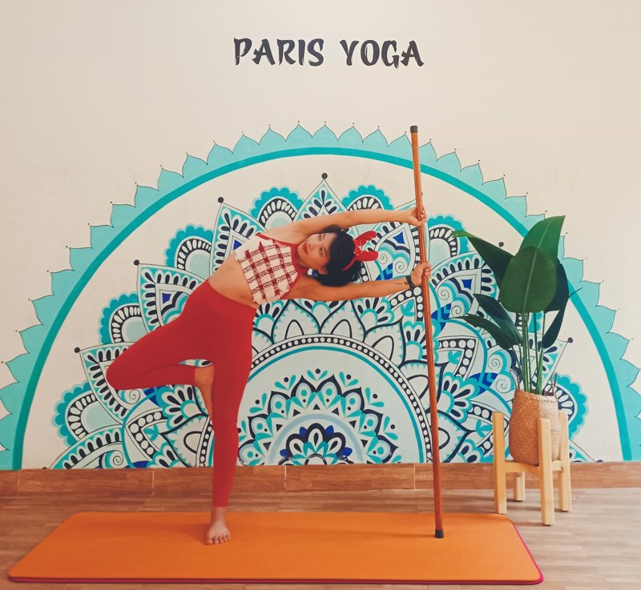
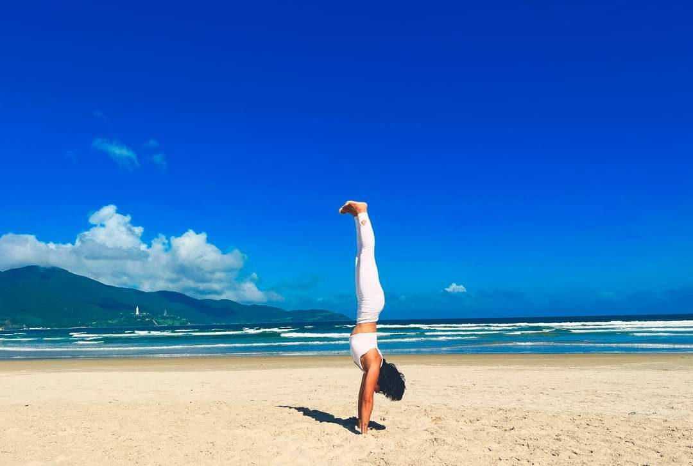

Yoga người lớn · Kiến thức cần biết khi tập yoga
5 điểm chính và 8 lưu ý trên con đường tập yoga
Tập yoga thì cần nhớ những gì? Có một hình ảnh giúp Sophia trả lời câu này dễ nhất. Một chiếc xe.

Đời người là một hình tam giác
Trong yoga có một hình ảnh Sophia rất thích. Đời người như một hình tam giác. Sinh ra. Trưởng thành. Rồi thay đổi, suy yếu, và mất đi.
Tới khoảng 18 tuổi, cơ thể xây nhiều hơn hao. Tế bào mới sinh ra nhiều hơn tế bào già đi. Từ 18 tới 35 tuổi, hai bên gần như cân bằng. Sau đó, phần hao mòn mạnh dần lên, đưa con người tới lúc suy tàn.
Nghĩ tới hình tam giác ấy, cô không thấy buồn. Cô thấy rõ hơn. Vì thế người tập yoga sống một đời tự kỷ luật. Một đời đơn giản, nhưng cần sự kiên định.
Cơ thể là một cỗ xe
Cơ thể là ngôi đền. Là dụng cụ. Là cỗ xe cho linh hồn trú ngụ và sử dụng.
Mà xe thì cần gì? Dầu bôi trơn. Pin. Hệ thống làm mát. Nhiên liệu. Và một người lái xe có trách nhiệm. Thiếu một thứ, xe vẫn chạy được ít lâu. Rồi sẽ hỏng.
- Dầu bôi trơn
- Pin
- Làm mát
- Nhiên liệu
- Người lái
5 điểm chính trong yoga
Năm điểm này đi cùng nhau. Tập tư thế mà thở sai, hay ăn uống bừa bãi, hay không bao giờ chịu nằm yên nghỉ, thì cỗ xe vẫn lệch.
1Tập luyện đúng cách
Asana · 🚗 Dầu bôi trơn
Gân, cơ, dây chằng được kéo giãn. Máu chạy đều hơn. Khớp linh hoạt hơn. Giống xe được tra dầu, chạy êm, ít mòn.
Đọc thêm: 10 nguyên tắc định tuyến
2Hít thở đúng cách
Pranayama · 🚗 Bình điện
Hơi thở nối cơ thể với nguồn năng lượng. Thở đúng thì thân khỏe, đầu óc sáng, tinh thần trẻ ra.
Đọc thêm: Các phép thở
3Thư giãn đúng cách
Savasana · 🚗 Hệ thống làm mát
Thân và trí làm việc quá sức thì hiệu quả kém đi. Thư giãn đúng cho cơ thể hồi lại, nạp lại năng lượng.
4Ăn uống đúng cách
ăn chay, thanh đạm · 🚗 Nhiên liệu
Ăn là đổ nhiên liệu cho cơ thể. Thứ gì đưa vào cũng cần được chọn, để nguồn năng lượng sạch và đủ.
5Tư duy tích cực và thiền định
Vedanta và Dhyana · 🚗 Người lái xe
Điều khiển và làm trong tâm trí. Giữ tâm vững, rèn sự tập trung, để đi tới đỉnh cao của yoga là thiền định.
Đọc thêm: Hơi thở bốn thì
Năm điểm này cô đã viết kỹ hơn, kèm những gì cô hay thấy ở lớp, trong bài Mục đích thực sự của việc tập yoga. Bài này đi tiếp một bước: khi đã lên đường rồi, cần để ý những gì.
8 lưu ý trên con đường luyện tập
Đây là những điều Sophia vẫn tự nhắc mình mỗi ngày, và cũng là những điều cô nhắc học viên nhiều nhất. Không có điều nào khó. Chỉ là dễ quên.
- 1. Tập trung vào sự chú ý của bản thân
- 2. Nhận biết hơi thở của mình
- 3. Xây dựng một nền tảng vững chắc
- 4. Cách vào và thoát ra một thế
- 5. Lắng nghe sự đau nhức của bản thân
- 6. Luyện tập đều đặn, tu dưỡng trau dồi Tâm và Thân
- 7. Có trách nhiệm với bản thân mình
- 8. Rèn luyện lòng kiên nhẫn
1🎯 Tập trung vào sự chú ý của bản thân
Chìa khóa nằm ở đây. Đưa sự chú ý vào sâu bên trong cơ thể.
Chú ý vào hơi thở. Vào chỗ đang được kéo giãn. Vào cơ, vào khớp, vào tốc độ mình đang chuyển động. Thế dễ hay thế khó cũng vậy. Tập với sự chú ý trọn vẹn như thế không chỉ luyện thân, mà còn tác động rất sâu tới trí não.
Chú ý đặt ở đâu, buổi tập đi về đó. Đặt ở thảm bên cạnh thì mình tập để so. Đặt ở đồng hồ thì mình tập cho xong. Đặt vào trong thì khác hẳn.
Ở lớp, cô hay thấy: Có người tập cả tiếng mà mắt cứ đảo quanh phòng. Xem ai xuống sâu hơn, ai giữ lâu hơn. Cô hay nhắc nhỏ: “Nhắm hờ mắt lại đi em. Nghe giọng cô là đủ rồi.” Vài phút sau, gương mặt người ấy dịu hẳn.
Gợi ý nhỏ cho buổi tập tới: Ở tư thế đứng đầu tiên, đứng yên ba hơi thở. Tự hỏi: lúc này chỗ nào trong người đang căng?
2🌬️ Nhận biết hơi thở của mình
Khi tập các thế đúng cách, mình sẽ dễ nhận ra: hầu hết các thế nâng lên, mở ra đều đi cùng hơi hít vào. Hơi thở và nội lực trong cơ thể đang được dùng cùng nhau.
Trong lúc giữ thế, hơi thở cần sâu và đều. Chỉ thở bằng mũi. Thở ra chậm rãi, êm, đều đặn và sâu.
Không nín thở ở cổ họng. Không tạo ra tiếng ồn khi thở. Trừ khi đang tập một phép thở có yêu cầu riêng.
Ở lớp, cô hay thấy: Thế càng khó, người ta càng hay nín thở mà không biết. Cô đứng gần là nghe được. Hơi thở khựng lại ở đâu, chỗ ấy là mình đang cố quá sức.
Gợi ý nhỏ cho buổi tập tới: Chọn một thế quen. Đếm số hơi thở mình giữ được trong thế đó mà hơi thở vẫn êm. Đến đó là đủ.
Đọc thêm: Các phép thở trong Yoga.
3🏛️ Xây dựng một nền tảng vững chắc
Mỗi khi tập một asana, cô để ý xem thế ấy đang tác động lên cơ thể ra sao. Có thể là lên các nhóm cơ. Có thể là lên huyệt đạo, hệ thần kinh, cột sống. Quan sát, và tập trung sâu vào từng asana một.
Yoga có rất nhiều asana. Nhưng có khoảng 12 asana cơ bản, được xếp theo thứ tự từ 1 đến 12 để người tập lần lượt thực hành. Khi cơ thể đã thật hiểu và quen với các thế nền tảng này, lúc đó mới sang biến thể và những thế nâng cao hơn.
Tập thường xuyên, đều đặn giúp mình củng cố sức mạnh, học được cách bảo vệ khớp, và tránh được những tổn thương, đau đớn trên đường tập.
Ở lớp, cô hay thấy: Người mới hay muốn bỏ qua thế đơn giản để làm ngay thế trong ảnh. Cô thường giữ lớp ở lại với tư thế cây, tư thế núi lâu hơn họ muốn. Bàn chân bám đất chưa vững thì chưa đi xa được.
Gợi ý nhỏ cho buổi tập tới: Chọn một thế cơ bản mình tưởng đã biết. Tập lại thật chậm, như lần đầu.
Đọc thêm: 10 nguyên tắc định tuyến cơ bản khi tập yoga.

4🚪 Cách vào và thoát ra một thế
Bước vào một thế thì giữ cho mình tĩnh lặng, nhẹ nhàng. Sự bình tĩnh ấy có sức mạnh riêng của nó.
Vào thế chậm rãi. Thoát ra cũng chậm rãi, điềm tĩnh. Trong lúc chuyển động, quan sát cơ thể lần lượt từng phần:
- bàn tay
- cổ tay
- cánh tay trước
- cùi chỏ
- cánh tay và vai
- bàn chân
- mắt cá chân
- bắp chân
- đầu gối
- đùi
- hông
- khung chậu
- bụng
- ngực
- cổ
- vai
- đầu
Ở lớp, cô hay thấy: Nhiều người vào thế rất cẩn thận, giữ thế rất đẹp. Rồi tới lúc ra thì thả phịch xuống, như buông một túi đồ nặng. Lưng và gối hay mỏi ở đúng lúc ấy, chứ không phải lúc giữ thế.
Gợi ý nhỏ cho buổi tập tới: Ra khỏi mỗi thế bằng đúng thời gian mình đã dùng để vào thế.
5👂 Lắng nghe sự đau nhức của bản thân
Lắng nghe là một kỹ năng, học dần mới có. Quan sát cơ thể mình. Nhận ra những thay đổi bên trong. Và tôn trọng điều mình cảm nhận được.
Khi mới bắt đầu, điều quan trọng nhất là tránh đau. Chỉ khi đã có kinh nghiệm nhiều năm, biết chắc mình đang làm gì và hiểu rõ sức chịu đựng của cơ thể mình, lúc ấy mới tính khác.
Đau là cơ thể đang nói. Không phải thứ để vượt qua cho bằng được.
Ở lớp, cô hay thấy: Câu cô nghe nhiều nhất sau buổi tập là: “Lúc nãy em hơi đau, nhưng em cố thêm chút.” Cô luôn mong học viên nói câu ấy trong lúc tập, chứ không phải sau đó. Để cô kịp chỉnh, hoặc đổi cho một thế nhẹ hơn.
Gợi ý nhỏ cho buổi tập tới: Thấy đau nhói, đau ở khớp, đau lan ra thì dừng ngay và nói với người hướng dẫn. Không chờ hết buổi.
6📅 Luyện tập đều đặn, tu dưỡng trau dồi Tâm và Thân
Cách giữ được lâu nhất, theo Sophia, là tập mỗi ngày. Cùng một giờ, cùng một chỗ.
Buổi sáng sớm là lúc tốt nhất để tập.
Và sống theo những giới luật đạo đức của yoga. Vì yoga không chỉ nằm trên tấm thảm. Nó đi theo mình vào bữa cơm, vào lời nói với người thân.
Ở lớp, cô hay thấy: Người tập đều mỗi ngày mười lăm phút thường tiến nhanh hơn người dồn hai tiếng một lần mỗi tuần. Cơ thể nhớ thói quen. Tấm thảm trải sẵn ở một góc nhà cũng là một lời nhắc rất hiệu quả.
Gợi ý nhỏ cho buổi tập tới: Chọn một giờ cố định cho tuần này. Dù chỉ mười phút, cũng tập đúng giờ đó.
Đọc thêm: Tập yoga theo mùa và theo giờ · Giới và luật trong yoga.
7🤝 Có trách nhiệm với bản thân mình
Trên đường tập, gặp được một người thầy có tâm và có kiến thức là một may mắn. Một người đủ chuyên môn để chỉnh cho mình, và giữ cho mình cảm hứng với môn tập. Người hiểu cơ thể hoạt động ra sao, có kinh nghiệm giảng dạy, làm việc chuyên nghiệp.
Tin thầy trọn vẹn. Và vẫn giữ trách nhiệm với chính mình.
Thầy nhìn thấy mình từ bên ngoài. Còn cảm giác bên trong thì chỉ mình biết. Hai điều ấy cần đi cùng nhau.
Ở lớp, cô hay thấy: Học viên tin cô, có khi tin quá. Cô bảo xuống thêm chút là cố xuống, dù gối đã thấy khó chịu. Cô luôn dặn: “Cô gợi ý thôi. Cơ thể em mới là người quyết định.” Ai đang có bệnh lý thì cô xin hỏi ý kiến bác sĩ trước khi vào tập.
Gợi ý nhỏ cho buổi tập tới: Trước buổi tập, nói với người hướng dẫn chỗ nào trong người mình đang không ổn. Dù chỉ là một chút.

8🐢 Rèn luyện lòng kiên nhẫn
Sophia hay nghĩ tới con rùa. Chậm, kiên nhẫn, mà mỗi bước đều vững. Không buồn phiền vì mình tiến bộ chậm.
Trong yoga không có lối đi tắt. Cũng không có chỗ cho sự ganh đua, cạnh tranh.
Ở lớp, cô hay thấy: Có những thế người ta tập cả năm mới vào được. Có những ngày cơ thể cứng hơn hôm qua. Cô coi đó là bình thường. Cơ thể mỗi ngày một khác, không ai tiến theo một đường thẳng.
Gợi ý nhỏ cho buổi tập tới: Chụp một tấm ảnh thế mình đang tập hôm nay. Ba tháng nữa mới mở ra xem.

Gói lại

Tám lưu ý, nếu gói lại thật ngắn, thì còn ba điều. Chậm. Chú ý. Thật với mình.
Cỗ xe nào rồi cũng cũ đi. Nhưng một cỗ xe được tra dầu, được nghỉ, được đổ nhiên liệu sạch, có người lái tỉnh táo và không vội, thì đi được rất xa. Và đi êm.
Cô vẫn đang đi trên con đường ấy. Mỗi ngày một chút.
🌿 Muốn có người đi cùng trên con đường tập?
Ở các lớp người lớn, cô dạy chậm, chỉnh từng người, và nhắc đúng những lưu ý trong bài này. Có lớp online qua Zoom, có lớp kèm 1 kèm 1 (500.000đ / giờ) đi theo cơ thể và mục tiêu riêng của từng người.